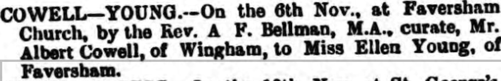

Albert Cowell cMay 1854 - c1922
[ Home ] | [ Calendar ] | [ Surnames Index ] | [ Errors ] | [ Family History ]An agricultural labourer and the child of William Cowell (a carter) and Hannah White, Albert Cowell, the first cousin three-times-removed on the mother's side of Nigel Horne, was born in Wingham, Kent, England c. May 18541, was baptised there on 23 Jul 1854 and married Ellen Young (with whom he had 5 children: Jim, Florrie Hannah, Nellie Sarah, Albert Thomas and Annie Emily, along with 2 surviving children) in Faversham, Kent, England on 6 Nov 18863.
During his life, he was living at Chalk Pit in Wingham on 7 Apr 18618; in Kingston, Kent, England in 1871; at Clements Row in Wingham on 5 Apr 18915; at Adisham Street, Adisham, Kent on 31 Mar 19016; and at Church Street, Nonington, Kent on 2 Apr 19117.
He died c. Apr 1922 in Eastry, Kent, England2 and was buried at St Mary The Virgin, Nonington, Kent on 8 Apr 19224.
Parents
- William was born c. 1829
- Hannah D was born c. 1831
Children
- Jim was born c. 1881
- Albert Thomas was born c. May 1894
- Annie Emily was born on 16 Feb 1896
Citations
- England & Wales births 1837-2006 - Findmypast
- England & Wales deaths 1837-2007 - Findmypast
- England Marriages 1538-1973 - Findmypast
- Kent, Canterbury Archdeaconry burials 1538-1988 - Findmypast
- 1891 England, Wales & Scotland Census - Findmypast (was age 36 and the head of the household)
- 1901 England, Wales & Scotland Census - Findmypast (was age 46 and the head of the household Blind in one eye)
- 1911 Census for England & Wales - Findmypast (was age 56 and the head of the household)
- 1861 England, Wales & Scotland Census - Findmypast (was age 7 and the son of the head of the household)
Media
Canterbury Journal, Kentish Times and Farmers' Gazette 20 Nov 1886

England & Wales deaths 1837-2007 - BMD/D/1922/2/AZ/000186/140
Kent, Canterbury Archdeaconry burials 1538-1988 - GBPRS/CANT/D/95343964
England Marriages 1538-1973 - R_848611265
Kent, Canterbury Archdeaconry marriages 1538-1928 - GBPRS/CANT/M/97028993/1
England & Wales marriages 1837-2008 - BMD/M/1886/4/AZ/000070/187
England & Wales births 1837-2006 - BMD/B/1854/2/AG/000891/020
1891 England, Wales & Scotland Census - GBC/1891/0005927285
1911 Census for England & Wales - GBC/1911/RG14/04560/0013/1
1871 England, Wales & Scotland Census Transcription - GBC-1871-0014170194
England Marriages 1538-1973 - R_854022771
Family Tree

Map
Generated by ged2site. Last updated on Jul 3, 2024
Known Issues
Residence record for 1871 contains no citation
Location for 1861 (Chalk Pit, Wingham, Kent, England) differs from mother's (Wingham, Kent, England)
Date of residence (7 Apr 1861) differs from mother's in same year (1861)
Census information missing between Census UK 1871 and Census UK 1891